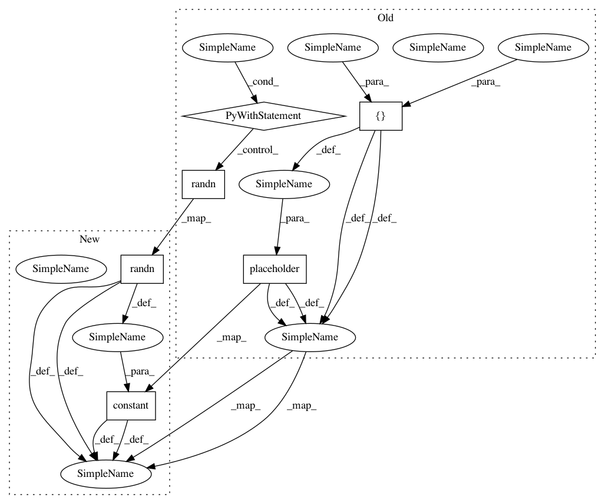

f7c759ca562303127a9991574d5a985d4dff99e8,sonnet/python/modules/basic_rnn_test.py,DeepRNNTest,testComputation,#DeepRNNTest#,368
Before Change
if create_initial_state:
prev_state = deep_rnn.initial_state(batch_size, tf.float32)
else:
prev_state1 = tf.placeholder(
tf.float32, shape=[batch_size, hidden1_size])
prev_state2 = tf.placeholder(
tf.float32, shape=[batch_size, hidden2_size])
prev_state = (prev_state1, prev_state2)
output, next_state = deep_rnn(inputs, prev_state)
with self.test_session() as sess:
// With random data, check the DeepRNN calculation matches the manual
// stacking version.
input_data = np.random.randn(batch_size, in_size)
feed_dict = {inputs: input_data}
if not create_initial_state:
feed_dict[prev_state1] = np.random.randn(batch_size, hidden1_size)
feed_dict[prev_state2] = np.random.randn(batch_size, hidden2_size)
tf.global_variables_initializer().run()
outputs_value = sess.run([output, next_state[0], next_state[1]],
feed_dict=feed_dict)
output_value, next_state1_value, next_state2_value = outputs_value
// Build manual computation graph
output1, next_state1 = cores[0](inputs, prev_state[0])
if skip_connections:
input2 = tf.concat([inputs, output1], 1)
else:
input2 = output1
output2, next_state2 = cores[1](input2, prev_state[1])
if skip_connections:
manual_output = tf.concat([output1, output2], 1)
else:
manual_output = output2
manual_outputs_value = sess.run([manual_output, next_state1, next_state2],
feed_dict=feed_dict)
manual_output_value = manual_outputs_value[0]
manual_next_state1_value = manual_outputs_value[1]
manual_next_state2_value = manual_outputs_value[2]
After Change
if create_initial_state:
prev_state = deep_rnn.initial_state(batch_size, tf.float32)
else:
prev_state1 = tf.constant(
np.random.randn(batch_size, hidden1_size), dtype=tf.float32)
prev_state2 = tf.constant(
np.random.randn(batch_size, hidden2_size), dtype=tf.float32)
prev_state = (prev_state1, prev_state2)
output, next_state = deep_rnn(inputs, prev_state)
In pattern: SUPERPATTERN
Frequency: 3
Non-data size: 6
Instances
Project Name: deepmind/sonnet
Commit Name: f7c759ca562303127a9991574d5a985d4dff99e8
Time: 2018-07-17
Author: tomhennigan@google.com
File Name: sonnet/python/modules/basic_rnn_test.py
Class Name: DeepRNNTest
Method Name: testComputation